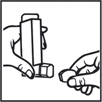
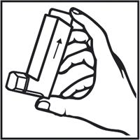
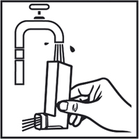

|
 |
| НОВАТРОН НЕО (NOVATRON NEO) salbutamol аэрозоль д/ингаляций дозир. | ||||||||
|
Клинико-фармакологическая группа: Бронхолитический препарат - бета2-адреномиметик Номер и дата регистрации: ЛП-006383 от 31.07.20 Код ATX: R03AC02 |
Владелец регистрационного удостоверения: зарегистрировано и произведено Представительство: | |||||||
Форма выпуска, состав и упаковка Аэрозоль для ингаляций дозированный в виде суспензии белого или почти белого цвета.
Вспомогательные вещества: этанол (спирт этиловый абсолютированный) - 3.42 мг, пропеллент HFA-134a (1,1,1,2-тетрафторэтан) - 26.46 мг. 200 доз - баллоны алюминиевые (1) с дозирующим клапаном и распылительной насадкой - пачки картонные. | ||||||||
| ||||||||
Описание препарата основано на официально утвержденной инструкции по применению и утверждено компанией-производителем для издания 2022 г. | ||||||||
Фармакологическое действие |
Фармакокинетика |
Показания |
Режим дозирования |
Побочное действие |
Противопоказания |
Беременность и лактация |
Особые указания |
Передозировка |
Лекарственное взаимодействие |
Условия хранения и сроки годности |
Условия реализации
Фармакологическое действие
Сальбутамол является селективным агонистом β2-адренорецепторов (бета2-адреномиметиком). В терапевтических дозах действует на β2-адренорецепторы гладкой мускулатуры бронхов и оказывает непродолжительное (от 4 до 6 ч) бронхорасширяющее действие на β2-адренорецепторы с быстрым наступлением действия (в течение 5 мин) при обратимой обструкции дыхательных путей. Оказывает выраженный бронходилатирующий эффект, предупреждая или купируя спазм бронхов, снижает сопротивление в дыхательных путях, увеличивает жизненную емкость легких. Увеличивает мукоцилиарный клиренс (при хроническом бронхите до 36%), стимулирует секрецию слизи, активирует функции мерцательного эпителия. В рекомендуемых терапевтических дозах не оказывает отрицательного влияния на сердечно-сосудистую систему, не вызывает повышения АД. В меньшей степени, по сравнению с лекарственными препаратами этой группы, оказывает положительное хроно- и инотропное действие. Вызывает расширение коронарных артерий. Обладает рядом метаболических эффектов: снижает концентрацию калия в плазме крови, влияет на гликогенолиз и выделение инсулина, оказывает гипергликемический (особенно у пациентов с бронхиальной астмой) и липолитический эффекты, увеличивает риск развития ацидоза. Фармакокинетика
Всасывание После проведения ингаляции 10-20% дозы сальбутамола достигают нижних дыхательных путей. Остальная часть дозы остается в ингаляторе или откладывается в ротоглотке и затем проглатывается. Фракция, отложившаяся в дыхательных путях, абсорбируется в легочные ткани и кровь, но не метаболизируется в легких. Распределение Степень связывания сальбутамола с белками плазмы крови составляет 10%. Метаболизм При попадании в системный кровоток сальбутамол подвергается печеночному метаболизму и экскретируется преимущественно почками в неизменном виде или в виде фенольного сульфата. Проглоченная часть ингаляционной дозы абсорбируется из ЖКТ и подвергается значительному метаболизму при "первом прохождении" через печень, превращаясь в фенольный сульфат. Неизмененный сальбутамол и конъюгат экскретируются преимущественно почками. Выведение Введенный в/в сальбутамол имеет Т1/2 4-6 ч. Сальбутамол выводится частично почками и частично в результате метаболизма до неактивной 4'-О-сульфата (фенольный сульфат), который также выводится преимущественно почками. Через кишечник экскретируется лишь незначительная часть введенной дозы сальбутамола. Большая часть дозы сальбутамола, введенной в организм в/в, пероральным или ингаляционным путем, экскретируется в течение 72 ч. Показания
Бронходилататоры не должны являться единственным или основным компонентом терапии бронхиальной астмы нестабильного или тяжелого течения. При отсутствии реакции на сальбутамол у пациентов с тяжелой бронхиальной астмой рекомендуется проводить терапию ГКС с целью достижения и поддержания контроля заболевания. Отсутствие реакции на терапию сальбутамолом может указывать на необходимость в срочной консультации врача или лечении. Режим дозирования
Препарат предназначен только для ингаляционного введения путем вдыхания через рот. Повышенная потребность в применении агонистов β2-адренорепторов может являться признаком усугубления бронхиальной астмы. В подобной ситуации может потребоваться переоценка схемы лечения пациента с рассмотрением целесообразности назначения одновременной терапии ГКС. Т.к. передозировка может сопровождаться развитием нежелательных реакций, доза или кратность применения препарата могут быть увеличены только по рекомендации врача. Продолжительность действия сальбутамола у большинства пациентов составляет от 4 до 6 ч. У пациентов, испытывающих затруднения в синхронизации вдоха с применением дозирующего аэрозольного ингалятора под давлением, может быть использован спейсер. У детей и младенцев, получающих сальбутамол, целесообразно использование педиатрического спейсерного устройства с лицевой маской. Купирование приступа бронхоспазма Взрослые Рекомендуемая доза составляет 100 или 200 мкг (1 или 2 ингаляции). Дети Рекомендуемая доза составляет 100 мкг (1 ингаляция), при необходимости доза может быть увеличена до 200 мкг (2 ингаляции). Не рекомендуется применять препарат чаще 4 раз/сут. Потребность в таком частом применении дополнительных доз препарата или резком увеличении дозы свидетельствует об ухудшении течения бронхиальной астмы (см. раздел "Особые указания"). Предотвращение приступов бронхоспазма, связанных с воздействием аллергена или вызванных физической нагрузкой Взрослые Рекомендуемая доза составляет 200 мкг (2 ингаляции) за 10-15 мин до воздействия провоцирующего фактора или нагрузки. Дети Рекомендуемая доза составляет 100 мкг (1 ингаляция) за 10-15 мин до воздействия провоцирующего фактора или нагрузки, при необходимости доза может быть увеличена до 200 мкг (2 ингаляции). Длительная поддерживающая терапия Взрослые Рекомендуемая доза составляет до 200 мкг (2 ингаляции) 4 раза/сут. Дети Рекомендуемая доза составляет до 200 мкг (2 ингаляции) 4 раза/сут. Подготовка к первому применению Перед первым применением следует снять защитный колпачок с распылительной насадки. Потом хорошо встряхнуть баллон вертикальными движениями, перевернуть баллон насадкой-ингалятором вниз и сделать два распыления в воздух, чтобы убедиться в адекватной работе. При перерыве в использовании в течение нескольких дней следует сделать одно распыление в воздух после тщательного встряхивания баллона. Применение 1. Снять защитный колпачок с распылительной насадки, как показано на рисунке 1. Убедиться в чистоте внутренней и внешней поверхностей распылительной насадки.  Рис. 1 2. Хорошо встряхнуть баллон вертикальными движениями. 3. Перевернуть баллон распылительной насадкой вниз, держать баллон вертикально между большим, средним и указательным пальцами так, чтобы большой палец находился под распылительной насадкой, как показано на рисунке 2. Баллон должен быть направлен дном вверх (согласно стрелке на этикетке баллона).  Рис. 2 4. Сделать максимально глубокий выдох, затем поместить распылительную насадку в рот и обхватить ее губами. 5. Начиная вдох через рот, нажать на верхушку баллона, чтобы выполнить распыление препарата, при этом продолжать медленно вдыхать. 6. Задержать дыхание, вынуть распылительную насадку изо рта и выдохнуть через нос. 7. Если необходимо выполнить следующую ингаляцию, следует подождать приблизительно 30 сек, держа ингалятор вертикально, после этого выполнить пункты 2–6. 8. Закрыть распылительную насадку защитным колпачком. Важно! Выполняя стадии 4, 5 и 6, нельзя торопиться. Важно начать вдыхать как можно медленнее непосредственно перед тем, как нажать на ингалятор. В первые несколько раз рекомендуется попрактиковаться перед зеркалом. Если появляется "туман", выходящий из верхней части ингалятора или из уголков рта, то следует начать все заново со стадии 2. Если врач дал пациенту другие инструкции по использованию ингалятора, необходимо строго соблюдать их. Пациенту следует связаться с врачом, если возникнут трудности с использованием ингалятора. Очистка Распылительную насадку следует очищать не реже 1 раза в неделю. 1. Снять защитный колпачок с распылительной насадки, а распылительную насадку снять с баллона. 2. Тщательно промыть распылительную насадку и защитный колпачок под теплой проточной водой, как показано на рисунке 3.  Рис. 3 4. Тщательно высушить распылительную насадку и защитный колпачок внутри и снаружи. 5. Надеть распылительную насадку на баллон и шток клапана, закрыть свободное отверстие распылительной насадки защитным колпачком. Не следует погружать баллон в воду. Побочное действие
Нежелательные реакции, приведенные ниже, классифицированы по органам и системам, а также по частоте их возникновения: очень часто (≥1/10), часто (≥1/100, <1/10), нечасто (≥1/1000, <1/100), редко (≥1/10000, <1/1000), очень редко (<1/10000, включая единичные случаи). Со стороны иммунной системы: очень редко – реакции гиперчувствительности, включая ангионевротический отек, крапивницу, бронхоспазм, снижение АД и коллапс. Со стороны обмена веществ: редко – гипокалиемия. Терапия агонистами β2-адренорепторов может приводить к клинически значимой гипокалиемии. Со стороны нервной системы: часто – тремор, головная боль; очень редко – гиперактивность. Со стороны сердечно-сосудистой системы: часто – тахикардия; нечасто – ощущение сердцебиения; редко – периферическая вазодилатация; очень редко – аритмии, включая мерцательную аритмию; суправентрикулярная тахикардия и экстрасистолия. Со стороны дыхательной системы: очень редко – парадоксальный бронхоспазм. Со стороны ЖКТ: нечасто – раздражение слизистой оболочки полости рта и глотки. Со стороны костно-мышечной системы: нечасто – мышечные судороги. Если любые из указанных в инструкции нежелательных реакций усугубляются или отмечаются любые другие нежелательные реакции, не указанные в инструкции, пациенту необходимо сообщить об этом врачу. Противопоказания
С осторожностью Сальбутамол следует применять с осторожностью у пациентов с тиреотоксикозом, тахиаритмией, миокардитом, пороками сердца, аортальным стенозом, ИБС, тяжелой хронической сердечной недостаточностью, артериальной гипертензией, феохромоцитомой, декомпенсированным сахарным диабетом, глаукомой. Применение при беременности и кормлении грудью
Беременность Беременным женщинам сальбутамол следует назначать только в том случае, если ожидаемая польза для матери превышает потенциальный риск для плода. Имеются данные о редких случаях различных пороков развития у детей, включая формирование "волчьей пасти" и пороков развития конечностей, на фоне приема матерями сальбутамола во время беременности. В некоторых из этих случаев матери принимали несколько сопутствующих лекарственных препаратов в течение беременности. Ввиду отсутствия постоянного характера дефектов и фоновой частоты возникновения врожденных аномалий, составляющей от 2% до 3%, причинно-следственная связь с приемом сальбутамола не установлена. Период грудного вскармливания Сальбутамол, вероятно, проникает в грудное молоко, и поэтому не рекомендуется назначать его кормящим женщинам, за исключением тех случаев, когда ожидаемая польза для самой матери превышает потенциальный риск для ребенка. Нет данных о том, оказывает ли присутствующий в грудном молоке сальбутамол вредное действие на новорожденного. Фертильность Данных о воздействии сальбутамола на фертильность человека нет. В доклинических исследованиях нежелательного влияния на фертильность животных выявлено не было. Особые указания
Лечение бронхиальной астмы рекомендуется проводить поэтапно, контролируя клинический ответ пациента на лечение и функцию легких. Бронходилататоры не должны являться единственным или основным компонентом терапии бронхиальной астмы нестабильного или тяжелого течения. Повышение потребности в применении бронходилататоров короткого действия, в частности агонистов β2-адренорецепторов, для облегчения симптомов бронхиальной астмы свидетельствует об ухудшении течения заболевания. В таких случаях следует пересмотреть план лечения пациента. Внезапное и прогрессирующее ухудшение бронхиальной астмы может представлять потенциальную угрозу для жизни пациента, поэтому в подобных ситуациях следует рассмотреть целесообразность назначения или увеличения дозы ГКС. У пациентов группы риска рекомендуется проводить ежедневный мониторинг пиковой скорости выдоха. Терапия агонистами β2-адренорецепторов, особенно при их введении парентерально или с помощью небулайзера, может приводить к гипокалиемии. Особую осторожность рекомендуется проявлять при лечении тяжелых приступов бронхиальной астмы, поскольку в этих случаях гипокалиемия может усиливаться в результате одновременного применения производных ксантина, ГКС, диуретиков, а также вследствие гипоксии. В таких ситуациях рекомендуется контролировать концентрацию калия в плазме крови. Как и при использовании других средств для ингаляционной терапии, при приеме сальбутамола может развиваться парадоксальный бронхоспазм с усилением хрипов сразу же после применения препарата. Данное состояние требует немедленного лечения с использованием альтернативной формы выпуска сальбутамола или другого ингаляционного бронходилататора короткого действия. Препарат следует немедленно отменить, оценить состояние пациента и при необходимости назначить альтернативную терапию. В случае отсутствия эффекта от применения ранее эффективной дозы ингаляционного сальбутамола на протяжении, по крайней мере, 3 ч пациент должен обратиться к врачу для принятия каких-либо дополнительных мер. Следует проинструктировать пациентов о правильном использовании ингалятора препарата. Влияние на способность к управлению транспортными средствами и механизмами Данные о влиянии препарата на способность управлять транспортными средствами и механизмами отсутствуют. Передозировка
Признаками и симптомами передозировки сальбутамола являются преходящие явления, фармакологически обусловленные стимуляцией β-адренорецепторов (см. разделы "Особые указания" и "Побочное действие"), такие как снижение АД, тахикардия, мышечный тремор, тошнота, рвота. Применение высоких доз сальбутамола может вызвать метаболические изменения, включая гипокалиемию, поэтому необходимо контролировать концентрацию калия в сыворотке крови. При применении высоких доз, а также при передозировке бета-агонистов короткого действия наблюдалось развитие лактат-ацидоза, поэтому при передозировке может быть показан контроль повышения сывороточного лактата и возможностью развития метаболического ацидоза (особенно при сохранении или ухудшении тахипноэ, несмотря на устранение других признаков бронхоспазма, таких как свистящее дыхание). Лекарственное взаимодействие
Не рекомендуется одновременно применять сальбутамол и неселективные блокаторы β-адренорепторов, такие как пропранолол. Сальбутамол не противопоказан пациентам, которые получают ингибиторы МАО. У пациентов с тиреотоксикозом сальбутамол усиливает действие стимуляторов ЦНС и тахикардию. Теофиллин и другие ксантины при одновременном применении повышают вероятность развития тахиаритмий. Одновременное назначение с антихолинергическими средствами (в т.ч. ингаляционными) может способствовать повышению внутриглазного давления. Диуретики и ГКС усиливают гипокалиемическое действие сальбутамола. |
||||||||
Вернуться наверх |
||||||||
Copyright © Справочник Видаль «Лекарственные препараты в России», Москва, Россия